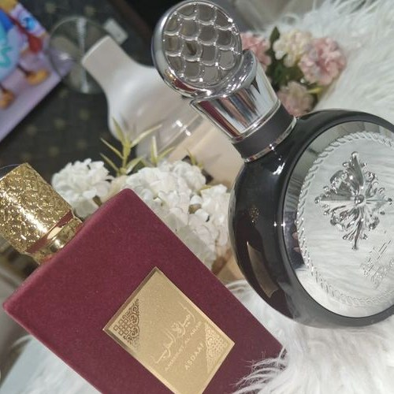
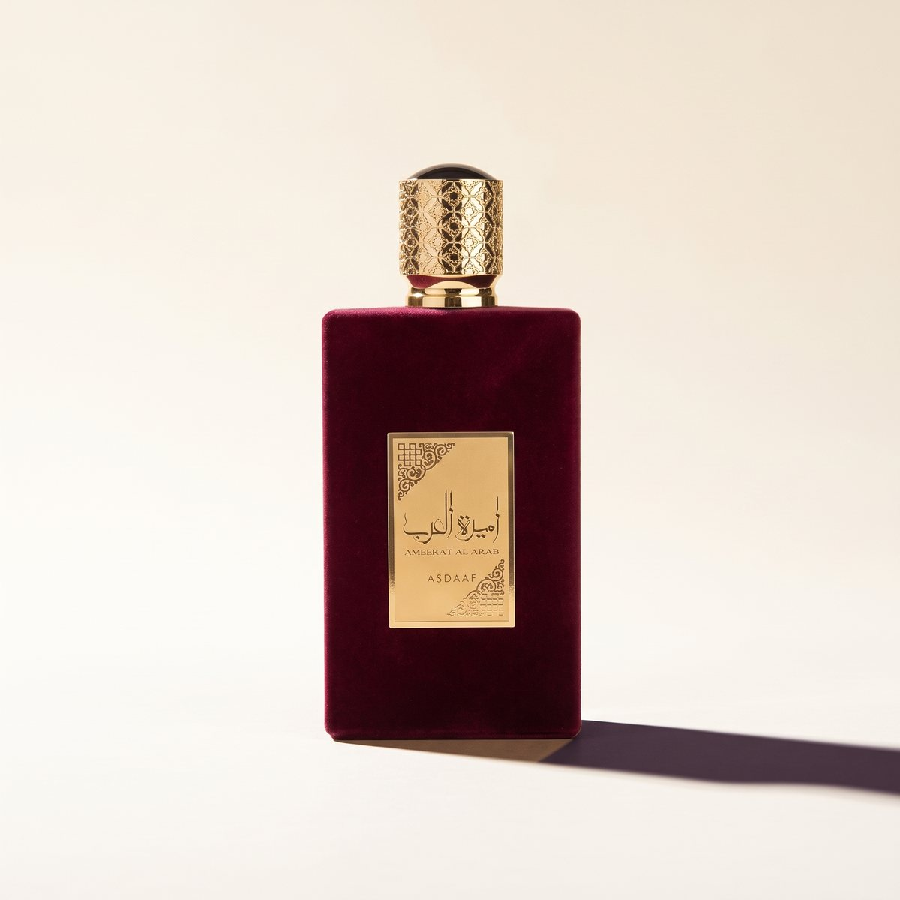
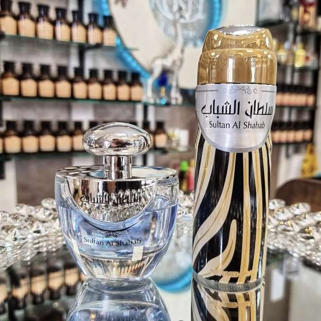
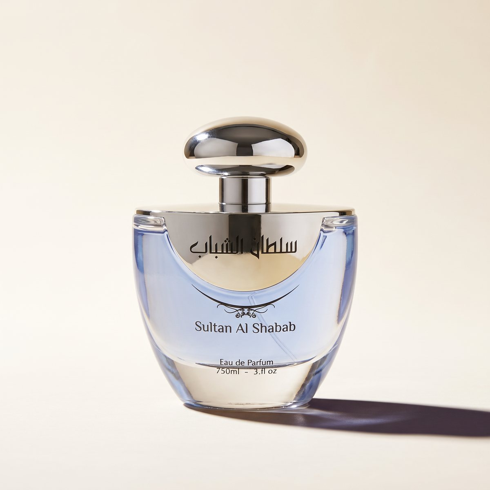

Youroma: Produktfotos mit KI
Aus echten Fotos im Laden wurden ruhige, einheitliche Produktbilder. KI hat die Bearbeitung übernommen, jedes Bild habe ich mit dem Original abgeglichen.

vorher: Ladenfoto
nachher: KI-bearbeitet
vorher: Ladenfoto
nachher: KI-bearbeitetWas gemacht wurde
Die Ausgangsbilder waren normale Fotos aus dem Laden: Regale, Spiegel und Deko im Hintergrund, unterschiedliches Licht, schräge Winkel. Für einen Onlineshop oder eine Kollektionsseite wirkt das unruhig, und jede Flasche sieht anders aus.
Mit KI habe ich die Flaschen freigestellt und vor einen ruhigen, hellen Hintergrund mit weichem Licht und echtem Schatten gesetzt. So bekommt die ganze Kollektion denselben Look, ganz ohne Fotoshooting.
Danach habe ich jedes Bild mit dem Original verglichen: Form der Flasche, Etikett, Schrift und Farbe müssen genau stimmen. Ein Bild, das die Ware anders zeigt als sie ist, wird verworfen.
Mehr dazu im Blog: Vom Handyfoto zur Produktgalerie
Die Website zum Projekt: Youroma: Parfümerie in Dresden